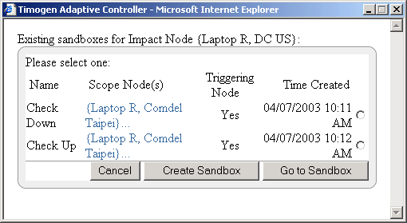
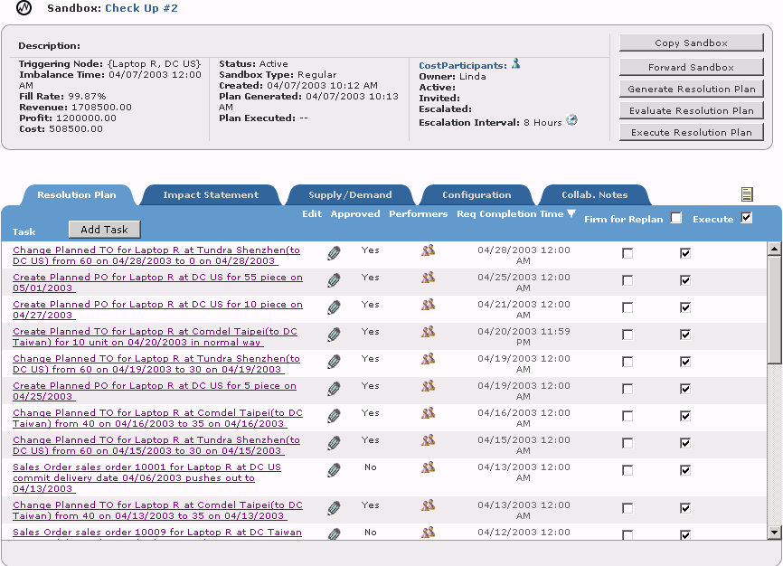

Solving Alerts
You solve alerts by using sandboxes to create scenarios and test different resolution plans, testing both the recommended action and any alternate actions you might think would work better. Once you determine the best course of action, you can implement the best solution.
Sandboxes exist for one or more Impact Nodes. When an alert occurs on a Impact Node where sandboxes exist, you can select from those sandboxes to solve the alert. You can also create a new sandbox. For more information, see "Analysis Sandbox".
To solve an alert
1 View the detail page of the alert you want to solve. (See "Viewing Alerts".)
2 Click Solve. The Existing Sandboxes of Impact Node dialog box appears.

Note: If no sandboxes exist for the Impact Node, then the New Sandbox dialog
box appears.
3 Select an existing sandbox, then click Go to Sandbox.
-or-
To create a new sandbox, click Create Sandbox. In the Create Sandbox dialog box, enter the new sandbox information (see "Creating Sandboxes"), then click OK in the confirmation dialog box.
-or-
To create a new sandbox, click Create Sandbox. In the Create Sandbox dialog box, enter the new sandbox information (see "Creating Sandboxes"), then click OK in the confirmation dialog box.
Whether using an existing sandbox or creating a new one, the sandbox page appears using a generated Resolution Plan.

4 Review the Resolution Plan information, click  to edit any Task, then click
Execute Resolution Plan when you're satisfied that the Task(s) will solve the alert.
to edit any Task, then click
Execute Resolution Plan when you're satisfied that the Task(s) will solve the alert.
5 In the confirmation dialog box, click Yes.